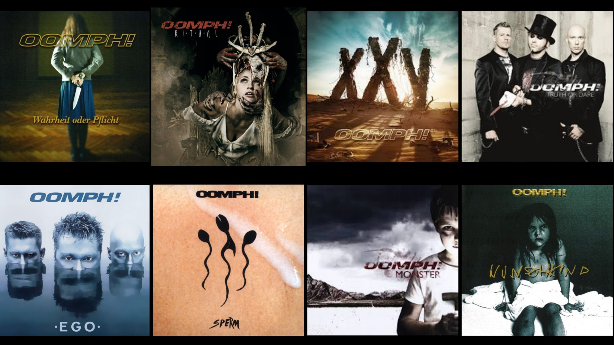
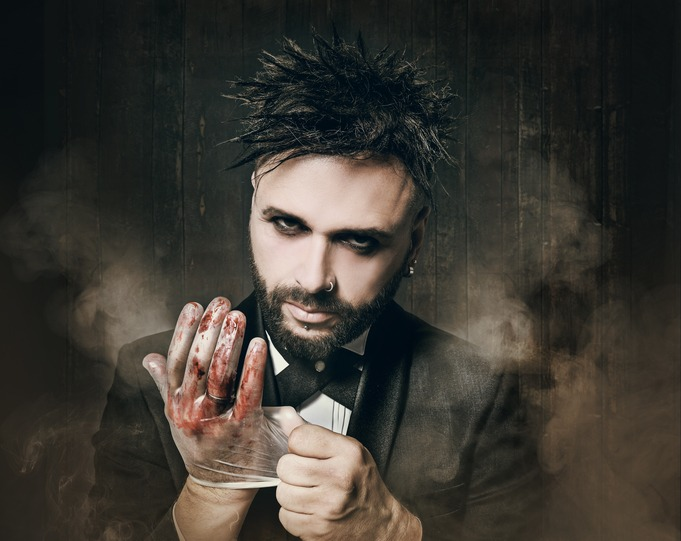
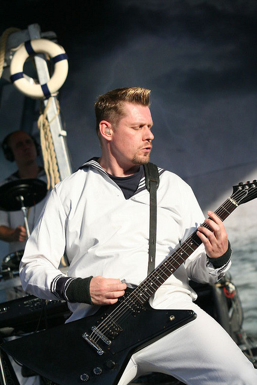
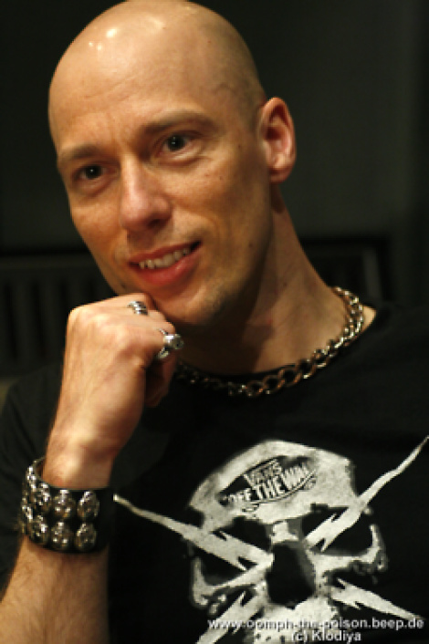

Oomph YouTube
Oomph YouTube
Oomph! – niemiecki zespół rockowo-heavymetalowy, założony w 1989 roku w Wolfsburgu. Są jednymi z prekursorów łączenia metalu i industrialu, chociaż na pierwszym albumie Oomph! doszukać można się inspiracji zespołem Nitzer Ebb. Mimo wszystko muzykę zespołu często trudno jest jednoznacznie zaszufladkować, dlatego można spotkać się z określeniem ich muzyki jako crossover, chociaż najczęściej szufladkuje się ją jako neue deutsche härte. Członkowie zespołu słuchają różnych gatunków muzyki, a do niektórych piosenek zainspirowały ich tacy wykonawcy jak np. The Beatles, ABBA, Depeche Mode, Nine Inch Nails, Björk, Garbage, KoЯn czy nawet Mozart. Piosenki zespołu śpiewane są zarówno w języku niemieckim, jak i angielskim. Członkowie zespołu, zwłaszcza Dero, nie kryją swojego lekceważącego podejścia do spraw religii i Boga. Ponadto zespół swoje niemieckie piosenki publikuje w anglojęzycznych wersjach. Skład zespołu poza koncertami nie uległ żadnej zmianie, od początku jego istnienia w jego skład wchodzi stała trójka: Dero, Crap i Flux. Styl zespołu zmienił się pomiędzy debiutanckim albumem Oomph! (1992), a następnym w kolejności Sperm (1994) – zdecydowano się na więcej gitarowego brzmienia i mniej elektroniki. Ów zabieg stał się inspiracją dla wielu innych zespołów, w tym dla Rammstein, co zespół kilkakrotnie podkreślał. Pierwsze albumy zespołu wydane zostały przez wytwórnie Machinery i Virgin Schallplatten, od 2004 roku jest to Supersonic Records. W tym samym roku po raz pierwszy na szczyty niemieckich list przebojów dostała się piosenka Oomph! – Augen auf!, która znalazła się także na soundtracku do gry FIFA 2005. Wydany w marcu 2006 roku album GlaubeLiebeTod promowały teledyski i single Gott ist ein Popstar, Das letzte Streichholz i Die Schlinge. Także w 2006 roku pojawiły się dwie kompilacje: 1998-2001: Best of Virgin Years i Delikatessen. Znalazły się na nich piosenki z poprzednich albumów oraz niepublikowane wcześniej wersje niektórych z nich, np. instrumentalna wersja Swallow, wersje na żywo Gekreuzigt i Unsere Rettung czy remake Gekreuzigt 2006 oraz cover The Power of Love zespołu Frankie Goes to Hollywood.
Albumy
Skład
Dero Goi – współzałożyciel, wokalista, autor tekstów i perkusista

Andreas Crap – gitarzysta
